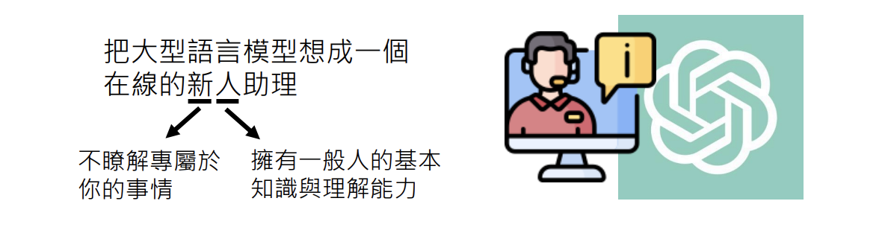

訓練不了人工智慧？你可以訓練你自己(上)-神奇咒語與提供更多資訊
李宏毅 生成式導論 2024 第3講
tags: 李宏毅 NTU 生成式導論 2024
本節課授課方向
首先，為了避免誤解，本課程不涉及任何模型訓練，也不是教你如何針對特定任務寫 prompt。常有人問：「老師，我想做某件事，能不能教我怎麼寫 prompt？」但其實這並不需要特別學習，因為現今的語言模型已經非常強大，不論用哪種方式提問，它幾乎都能理解並給出適當回應。
Note
所以，與其糾結於 prompt 的格式，不如專注於如何提升自己與 AI 協作的能力，才能真正發揮 AI 的最大價值！🚀
現今的語言模型只要能夠清楚描述問題，就能獲得對應的回應，因此可視為一位線上新人助理。這位助理具備一般人的知識與理解能力，但因為第一次認識你，對你的細節資訊一無所知，故在某些情境下可能無法精準回應。因此，提供明確前提或額外資訊對於獲得更準確答案是很重要的。

Info
- 在本節課中沒有任何模型被訓練
- 本節課重點不是講針對特定任務的 prompt
- 給語言模型的 prompt 不需要特定格式
- 按照今天語言模型能力，你把需要的任務描述清楚即可
強化語言模型能力的不訓練策略
語言模型的強大之處不在於重新訓練參數，而在於如何利用提示（prompting）策略來喚起模型內部既有的知識。以下整理了幾個經典與實驗驗證過的策略：
1. 叫模型思考 – Chain of Thought (CoT)

- 基本概念：在數學或邏輯問題中，加入指令如 “let's think step by step” 能顯著提高正確率。例如，一個研究顯示直接解題時正確率僅 17.7%，而加入「想一想」後正確率上升到 57%，進一步使用「一步一步思考」可達 78%。
- 注意事項：這些神奇咒語對較舊的模型效果顯著，但對最新版本（如 GPT-3.5 或 GPT-4）可能影響較小，因為現有模型本身已具備較強的推理能力。
2. 模型自我解釋


- 核心觀點：要求模型解釋其答案（例如，解釋批改文章的依據），能使模型的最終回應與人類評分更接近。研究發現，先讓模型闡述理由再給出結果，往往能提高回答的正確性與一致性。
3. 情緒刺激與提示策略

- 情緒勒索：告知模型「這件事對我的人生很重要」可以顯著提升某些任務的表現。多個實驗針對不同模型均發現，這種情緒刺激能使模型在某些任務上獲得更高的正確率。
- 其他提示：研究進一步指出：
- 直接要求：明確告訴模型「要做什麼」比指示「不要做什麼」更有效。
- 獎懲機制：指示「做得好給小費，做不好要處罰」有助於改善輸出品質。
- 避免偏見：要求模型保證答案中無偏見或刻板印象，也能改善回應。
4. 提供前提與 In-Context Learning


- 原理說明：當模型對某些知識或任務缺乏了解時，提供額外前提與範例（即 In-Context Learning）能補充資訊，使得模型的回應更精確。例如：
- NTU縮寫問題：依據不同背景（臺灣人或新加坡人）的前提，模型對 NTU 的理解會不同；明確告知前提可讓模型正確區分「國立臺灣大學」與「南洋理工大學」。
- 表格生成：如果要求模型整理關於 GPT 系列模型的參數與訓練資料，直接提供相關論文或網路資料，模型能夠自動生成更準確的表格。
- 關鍵提醒：In-Context Learning 並不代表模型參數被改變，而僅僅是利用額外的上下文來引導回答。
5. 用 AI 尋找神奇咒語


- 策略描述：利用增強式學習訓練一個專門搜尋有效提示語的模型，能夠自動發掘出比人工編寫更強效的提示。例如，實驗中發現某些不易理解的神奇咒語在 GPT-3 上可以顯著延長回答文字，但在較新版本中效果有限。
- 應用實例：在某實驗中，直接要求模型延長回答僅能使平均回答從 18.6 個字增加至 23.76 個字，而透過 AI 搜尋神奇咒語，平均回答長度可以達到 34 個字，顯示出提示語在特定情境下的增強效果。
6. 模型能力的範例實驗與排行榜


- 排行榜概念：除了對模型進行評比，也可以針對不同提示語（Prompt）進行排行榜排名。這樣的比較有助於識別出哪些提示語能最大程度提升模型表現。
- 實際觀察：雖然某些神奇咒語在舊版模型上效果明顯，但隨著模型能力普遍提升，其效果可能變得不那麼顯著。實驗顯示，最新版本的 GPT-3.5 在未使用神奇咒語時就能取得相當高的正確率，提示語的邊際效用減弱。
7. 翻譯與 In-Context Learning 的實驗：Gemini 1.5 案例


- 實驗背景：以翻譯一個極少人使用的卡拉蒙語為例，模型在未提供額外教材時翻譯表現極差；而在提供包含文法書與字典的豐富資料後，翻譯正確率顯著提升（人類評分可達 4.36 分甚至 5.52 分，滿分為 6 分）。
- 關鍵點：這說明 In-Context Learning 能夠補足模型知識的不足，但該效果僅在提供額外資料的情境下顯現，若下次不再提供這些資訊，模型可能無法延續相同表現。
總結
不訓練模型本身，而是透過精心設計的提示與額外上下文，能夠顯著強化大型語言模型在各種任務中的表現。從 Chain of Thought、模型自我解釋，到情緒刺激、前提說明與 In-Context Learning，這些策略證明了在不改變模型參數的前提下，透過優化提示語與提供額外資訊，可以使模型在數學、翻譯、文本生成等多方面達到更佳效果。此外，利用增強式學習自動搜尋神奇咒語的方式，也為未來提示工程提供了新的思路。這些知識與實驗結果為我們在應用生成式 AI 時提供了寶貴的參考，讓使用者能夠更靈活地運用現有模型，並根據任務需求調整提示策略以獲得最佳表現。